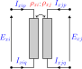
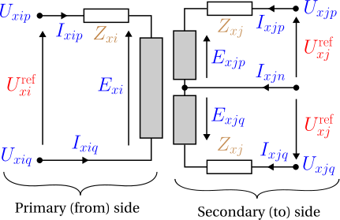
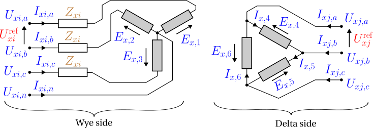

Transformers
A transformer couples two buses through galvanically isolated windings — primary and secondary share no conductor, only magnetic flux. Because the winding topologies differ qualitatively, each configuration is a distinct data-model object: single_phase, center_tap, wye_delta, and delta_wye. Every model is built from an idealised winding pair plus a series leakage impedance; a magnetising shunt, internal neutral grounding, and tap-changing are not yet modelled (see Background & scope). Symbols are defined in Notation.
1. Data model
Each subtype is an entry under transformer.<subtype>, keyed by its string ID $x$. Common fields (two-winding subtypes):
| Field | Type | Unit | Req. | Description |
|---|---|---|---|---|
bus_from, bus_to | string | – | ✔ | Endpoint bus IDs $i$, $j$ |
terminal_map_from, terminal_map_to | string[] | – | ✔ | Conductor→terminal maps (lengths per subtype) |
v_nom_from, v_nom_to | number | V | ✔ | Nominal winding voltages — set the turns ratio |
s_rating | number | VA | ✔ | Nameplate apparent-power rating |
r_series_from, x_series_from | number | Ω | From-winding series leakage (single_phase, center_tap) | |
r_series_to, x_series_to | number | Ω | To-winding series leakage (single_phase, center_tap) | |
r_series, x_series | number | Ω | Series leakage, wye winding only (wye_delta, delta_wye) | |
i_max_from, i_max_to | number[] | A | Per-conductor current limits |
Terminal-map lengths: single_phase 2 + 2; center_tap 2 (from) + 3 (to, ordered L1/centre/L2); wye_delta 4 (wye) + 3 (delta); delta_wye 3 (delta) + 4 (wye). For center_tap, v_nom_to is the half-winding (leg) voltage — e.g. 120 V for a 240/120 V service — not the full secondary span.
2. Input symbols
| Field | Symbol | Notes |
|---|---|---|
v_nom_from, v_nom_to | $\textcolor{red}{U^{\text{nom}}_i},\ \textcolor{red}{U^{\text{nom}}_j}$ | turns ratio $\textcolor{red}{N}=\textcolor{red}{U^{\text{nom}}_i}/\textcolor{red}{U^{\text{nom}}_j}$ |
r/x_series_from | $\textcolor{brown}{Z^{\text{fr}}_x}=\textcolor{red}{R^{\text{fr}}_x}+\textcolor{brown}{j}\textcolor{red}{X^{\text{fr}}_x}$ | from-winding leakage |
r/x_series_to | $\textcolor{brown}{Z^{\text{to}}_x}=\textcolor{red}{R^{\text{to}}_x}+\textcolor{brown}{j}\textcolor{red}{X^{\text{to}}_x}$ | to-winding leakage |
r_series, x_series | $\textcolor{brown}{Z^{\text{wye}}_x}=\textcolor{red}{R^{\text{wye}}_x}+\textcolor{brown}{j}\textcolor{red}{X^{\text{wye}}_x}$ | wye-side leakage (wye_delta/delta_wye) |
s_rating | $\textcolor{red}{S^{\max}_x}$ | nameplate |
3. Variables
Each winding conductor $k$ on side $\sigma\in\{\text{fr},\text{to}\}$ carries a complex winding current $\textcolor{blue}{I_{x,\sigma,k}}$. For the winding spanning terminal pair $(p_k,q_k)$ on bus $b^\sigma$, write the winding voltage
\[\textcolor{blue}{V^{\sigma}_{x,k}} = \textcolor{blue}{U_{b^\sigma,p_k}} - \textcolor{blue}{U_{b^\sigma,q_k}}\]
(phase-to-neutral for a wye winding, line-to-line for a delta winding, with $\textcolor{blue}{U}=0$ when $q_k$ is absent/ground).
4. Equality constraints
The idealised winding pair
Every transformer is built from ideal winding pairs obeying flux linkage, complex- power conservation, and winding KCL. With winding EMFs $\textcolor{blue}{E^{\text{fr}}_x},\textcolor{blue}{E^{\text{to}}_x}$ and the nominal voltages standing in for the turns ratio:

\[\frac{\textcolor{blue}{E^{\text{fr}}_x}}{\textcolor{red}{U^{\text{nom}}_i}} = \frac{\textcolor{blue}{E^{\text{to}}_x}}{\textcolor{red}{U^{\text{nom}}_j}}, \qquad \textcolor{red}{U^{\text{nom}}_i}\,\textcolor{blue}{I_{x,\text{fr}}} + \textcolor{red}{U^{\text{nom}}_j}\,\textcolor{blue}{I_{x,\text{to}}} = 0 \ \Longleftrightarrow\ \textcolor{red}{N}\,\textcolor{blue}{I_{x,\text{fr}}} + \textcolor{blue}{I_{x,\text{to}}} = 0.\]
The second relation is the ampere-turn balance; with all losses removed the EMF is the terminal voltage and $\textcolor{blue}{V^{\text{fr}}_x} = \textcolor{red}{N}\,\textcolor{blue}{V^{\text{to}}_x}$.
Series leakage
Each winding carries a series impedance between its EMF and its terminals (Ohm's law) — the model's one loss element, representing copper/leakage loss. Referred to the HV (from) side and combined, $\textcolor{brown}{Z_x}=\textcolor{brown}{Z^{\text{fr}}_x}+\textcolor{red}{N}^2\,\textcolor{brown}{Z^{\text{to}}_x}$, the ideal voltage relation becomes
\[\textcolor{blue}{V^{\text{fr}}_x} - \textcolor{red}{N}\,\textcolor{blue}{V^{\text{to}}_x} = \textcolor{brown}{Z_x}\,\textcolor{blue}{I_{x,\text{fr}}}.\]
This combined $\textcolor{brown}{Z_x}$ is what a short-circuit test measures — the series sum of the two winding leakages, referred to one side; it is not itself a separate element. single_phase and center_tap keep the two leakages as separate fields, r/x_series_from → $\textcolor{brown}{Z^{\text{fr}}_x}$ and r/x_series_to → $\textcolor{brown}{Z^{\text{to}}_x}$; wye_delta and delta_wye instead give a single r_series/x_series → $\textcolor{brown}{Z^{\text{wye}}_x}$ on the wye winding only (the delta winding is lossless in this model).
A standard short-circuit test yields only $\textcolor{brown}{Z_x}$ — the sum of the two winding leakages. Splitting it into $\textcolor{brown}{Z^{\text{fr}}_x}$ and $\textcolor{brown}{Z^{\text{to}}_x}$ requires an extra convention (OpenDSS splits per its winding definitions; a common default is to put it all on one winding, i.e. the Γ-model with the other winding's leakage zero). The data model exposes both fields so the convention is explicit rather than assumed.
The subtypes below place this leakage differently: single-phase and centre-tap keep it split across both windings; wye–delta / delta–wye lump it entirely on the wye side.
Single-phase
One winding pair — the archetypal two-winding transformer. With the combined leakage $\textcolor{brown}{Z_x}=\textcolor{brown}{Z^{\text{fr}}_x}+\textcolor{red}{N}^2\textcolor{brown}{Z^{\text{to}}_x}$ (see Series leakage above):
\[\textcolor{blue}{V^{\text{fr}}_{x,k}} - \textcolor{red}{N}\,\textcolor{blue}{V^{\text{to}}_{x,k}} = \textcolor{brown}{Z_x}\,\textcolor{blue}{I_{x,\text{fr},k}}, \qquad \textcolor{red}{N}\,\textcolor{blue}{I_{x,\text{fr},k}} + \textcolor{blue}{I_{x,\text{to},k}} = 0.\]
Center-tap (split-phase)
One HV winding drives two anti-series LV legs sharing a centre-tap neutral: two from terminals $[p,q]$, three to terminals $[p,n,q]$ (L1, centre, L2). The two half-windings are tightly coupled, so the model is a genuine three-winding (coupled-coil) unit, not two independent legs.

KCL at each side:
\[\textcolor{blue}{I_{x,\text{fr},p}}+\textcolor{blue}{I_{x,\text{fr},q}}=0, \qquad \textcolor{blue}{I_{x,\text{to},p}}+\textcolor{blue}{I_{x,\text{to},n}}+\textcolor{blue}{I_{x,\text{to},q}}=0.\]
Each winding EMF follows Ohm's law from its terminal voltage. The lower leg's dotted terminal is the centre tap $n$, not $q$, so its EMF runs from $n$ toward $q$:
\[\textcolor{blue}{E^{\text{fr}}_x} = (\textcolor{blue}{U_{i,p}}-\textcolor{brown}{Z^{\text{fr}}_x}\,\textcolor{blue}{I_{x,\text{fr},p}})-\textcolor{blue}{U_{i,q}}, \qquad \textcolor{blue}{E^{\text{to}}_{x,p}} = (\textcolor{blue}{U_{j,p}}-\textcolor{brown}{Z^{\text{to}}_x}\,\textcolor{blue}{I_{x,\text{to},p}})-\textcolor{blue}{U_{j,n}},\]
\[\textcolor{blue}{E^{\text{to}}_{x,q}} = (\textcolor{blue}{U_{j,n}}-\textcolor{brown}{Z^{\text{to}}_x}\,\textcolor{blue}{I_{x,\text{to},q}})-\textcolor{blue}{U_{j,q}}.\]
with flux linkage and ampere-turn balance across all three ports:
\[\frac{\textcolor{blue}{E^{\text{fr}}_x}}{\textcolor{red}{U^{\text{nom}}_i}} = \frac{\textcolor{blue}{E^{\text{to}}_{x,p}}}{\textcolor{red}{U^{\text{nom}}_j}} = \frac{\textcolor{blue}{E^{\text{to}}_{x,q}}}{\textcolor{red}{U^{\text{nom}}_j}}, \qquad \textcolor{red}{U^{\text{nom}}_i}\,\textcolor{blue}{I_{x,\text{fr},p}} + \textcolor{red}{U^{\text{nom}}_j}\,\textcolor{blue}{I_{x,\text{to},p}} + \textcolor{red}{U^{\text{nom}}_j}\,\textcolor{blue}{I_{x,\text{to},q}} = 0.\]
The centre-tap current $\textcolor{blue}{I_{x,\text{to},n}}=-(\textcolor{blue}{I_{x,\text{to},p}}+\textcolor{blue}{I_{x,\text{to},q}})$ is the leg-imbalance current; whether and how it is grounded is external to the transformer (see Grounding).
Wye–delta and delta–wye
Three winding pairs. The delta connection introduces a $\sqrt{3}$ factor, so the per-winding ratio is

\[\textcolor{red}{n^{\text{eff}}} = \begin{cases} \sqrt{3}/\textcolor{red}{N} & \text{wye\_delta (wye is from)},\\ \textcolor{red}{N}\,\sqrt{3} & \text{delta\_wye (delta is from)}. \end{cases}\]
For phase $k$ with cyclic partner $k'$ (next for Yd, previous for Dy), the delta line-to-line voltage equals $\textcolor{red}{n^{\text{eff}}}$ times the wye phase-to-neutral voltage, less the series drop on the wye phase current $\textcolor{blue}{I_{x,\text{wye},k}}$ through the wye-side leakage $\textcolor{brown}{Z^{\text{wye}}_x}$ (the delta winding is lossless):
\[\textcolor{blue}{U_{\text{del},k}} - \textcolor{blue}{U_{\text{del},k'}} = \textcolor{red}{n^{\text{eff}}}\big(\textcolor{blue}{U_{\text{wye},k}} - \textcolor{blue}{U_{\text{wye},n}}\big) - \textcolor{red}{n^{\text{eff}}}\,\textcolor{brown}{Z^{\text{wye}}_x}\,\textcolor{blue}{I_{x,\text{wye},k}}.\]
The current transform is the transpose (power-conservative), $\textcolor{red}{n^{\text{eff}}}\,\textcolor{blue}{I_{x,\text{del},k}} = -(\textcolor{blue}{I_{x,\text{wye},k}}-\textcolor{blue}{I_{x,\text{wye},k'}})$, and the wye star point satisfies $\textcolor{blue}{I_{x,\text{wye},n}}+\sum_k\textcolor{blue}{I_{x,\text{wye},k}}=0$. Whether the wye neutral is grounded is external to the transformer (see Grounding).
5. Inequality constraints
Cartesian variable bounds
Optional per-conductor current boxes on the winding-current components, from i_max_from/i_max_to — implied by the current circles below.
Engineering bounds
Per-winding current-magnitude circles, per conductor $k$ and side $\sigma$:
\[\textcolor{blue}{I_{x,\sigma,k}}\,(\textcolor{blue}{I_{x,\sigma,k}})^{*} \le (\textcolor{red}{I^{\max}_{x,\sigma,k}})^2.\]
Nameplate power. The winding-pair power transfer is bounded by the rating, $|\textcolor{blue}{E^{\text{fr}}_x}\,(\textcolor{blue}{I_{x,\text{fr}}})^{*}| \le \textcolor{red}{S^{\max}_x}/\textcolor{red}{n_x}$ with $\textcolor{red}{n_x}$ the number of winding pairs (1 single-phase, 3 three-phase; centre-tap uses 1 on the from winding and 2 on the to legs).